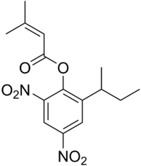
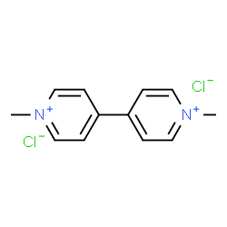
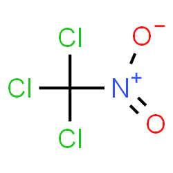

História
Estes produtos foram desenvolvidos durante a Primeira Guerra Mundial e extremamente utilizados na Segunda Guerra Mundial, como arma química. Após o término da guerra, estes passaram a ser usados como defensivo agrícola.
O primeiro composto desta classe, denominado DDT, foi fabricado em 1874 por Othomar Zeidler; contudo, foi apenas em 1939 que Paul Muller evidenciou suas propriedades inseticidas. A partir de então, o DDT era a principal arma no combate contra o mosquito disseminador da malária, até descobrir-se que ele, assim como todos os organoclorados, é um composto cancerígeno, teratogênico e cumulativo no organismo.
No período pós-guerra, os vencedores programavam uma ampliação dos seus negócios, partindo das indústrias que se desenvolveram durante a guerra, sendo encontrada dentre elas, a indústria química. Havia fome na Europa, surgindo então a “revolução verde”, que tinha como objetivo fomentar a agricultura, resultando na produção de alimentos.
Esta revolução desembarcou no Brasil na década de 1960. Estabeleceu-se por meio da imposição das fábricas de agrotóxicos e do governo nacional, sendo que o financiamento bancário para a aquisição de sementes era concedido apenas se o agricultor adquirisse também o agrotóxico e o adubo. Essa atitude resultou somente em uma contaminação ambiental, sem extermínio da fome. No ano de 1970, diversas fábricas mundiais foram transferidas para o Brasil, país englobado entre os 5 maiores consumidores de agrotóxicos do mundo.
A degradação do meio ambiente apresenta consequências a longo prazo e seus efeitos talvez sejam irreversíveis. Mundialmente, existem mais de 2 trilhões de toneladas de resíduos industriais sólidos e, aproximadamente, 350 milhões de toneladas de detritos são gerados anualmente.
Atualmente, cabe ao Ministério da Saúde o controle de agrotóxicos, enquanto que o controle ambiental cabe ao Ibama. O governo transmite todos os dados ao Ministério da Agricultura.
Os agrotóxicos são divididos em dois grupos: inseticidas e herbicidas. O primeiro subdivide-se em três amplos grupos, que são os organoclorados, os organofosforados e carbamatos e as piretrinas. Já os grupos mais importantes dos herbicidas são Paraquat, clorofenoxois e dinitrofenóis.
Os organoclorados são os agrotóxicos que persistem por mais tempo no ambiente, chegando a permanecer por um período de 30 anos. A absorção desse agente se dá pela mucosa oral, respiratória e pele, alcançando o sistema nervoso central e periférico. Estes são responsáveis por causar câncer e, por esse motivo, seu uso foi eliminado em diversos países.
Os organofosforados e carbamatos são inseticidas amplamente utilizados na atualidade e também apresentam absorção pela via oral, respiratória e dérmica. Estes agrotóxicos são responsáveis por levar a problemas funcionais da musculatura do corpo, cérebro e glândulas.
As piretrinas podem ser inseticidas naturais ou artificiais. Não servem para a agricultura, pois são instáveis à luz. Sua utilização se restringe ao ambiente doméstico na forma de spray, espirais ou em tabletes que se dissolvem quando aquecidos. São substâncias que podem desencadear crises alérgicas.
Os herbicidas Paraquat oferecem risco altamente elevado. Este herbicida mata todos os tipos de plantas e pode causar lesões renais e fibrose pulmonar irreversível.
| Nome | Fórmula Estrutural | Fórmula Molecular | Tipos | Classificação Tóxicologica |
|---|---|---|---|---|
| Aldrim | C12H8Cl6 | Inseticidas | III | |
| Binapacril |  | C15H18N2O6 | Fungicidas | III |
| Diquat | C12H12Br2N2 | Herbicidas | II | |
| Paraquat |  | C12H14Cl2N2 | Desfoliante | Classificação Tóxicologica |
| Cloroprina |  | CCl3NO2 | Fumigante | Classificação Tóxicologica |